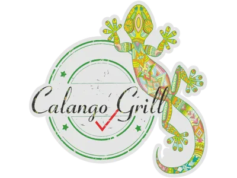
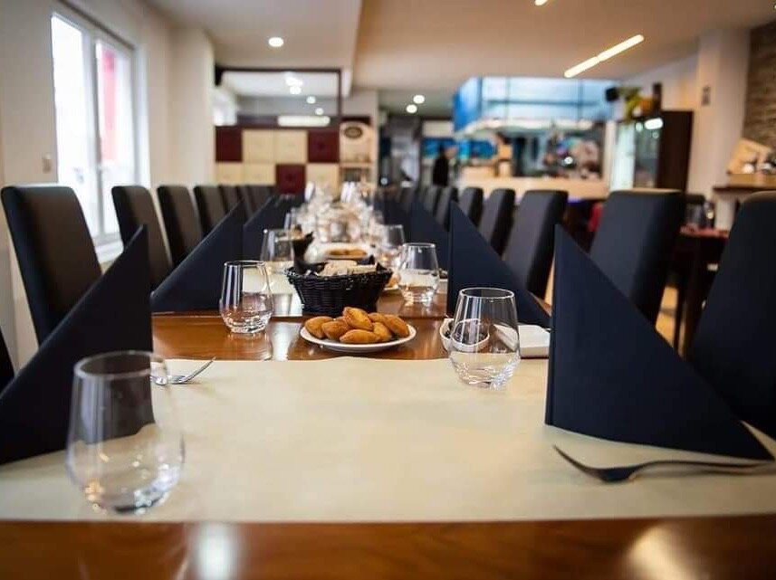

Picanha
Aiguillette de rumsteck — la coupe reine
★ La signature

CALANGO GRILLLe vrai rodízio brésilien : des broches de viandes grillées au feu, découpées à votre table, sans fin — tant que vous montrez le vert.

La grande table · notre salle18h30 – 22h00
7/7 · à confirmer
72 Rue Jean Jaurès
L-3490 Dudelange
Au rodízio, chaque convive garde un jeton. Côté vert vers le haut, les serveurs reviennent avec de nouvelles broches. Côté rouge, on souffle un instant. C'est vous qui menez la ronde — « a roda » — jusqu'à satiété.
Côté vert — apportez les broches !
Nos coupes signature, grillées à la braise et tranchées devant vous. Sélection indicative — à confirmer avec l'établissement.
Le rodízio complet : les serveurs enchaînent les broches à volonté, du début à la fin du service. Buffet de salades et accompagnements inclus.
La même ronde de broches en version déjeuner — généreuse et rapide, pensée pour la pause de midi.
Le « calango » — ce petit lézard bariolé de notre emblème — veille sur une adresse familiale où l'on cuisine le Brésil comme à la maison : généreux, chaleureux, sans chichi.
Ici, on vient pour le rodízio, la braise, et cette ambiance où la table se remplit d'amis et d'inconnus qui repartent rassasiés. Le plaisir avant tout.
Au cœur de Dudelange, quartier Terres Rouges. Groupes bienvenus — un coup de fil suffit pour réserver.
72 Rue Jean Jaurès · L-3490 Dudelange
18h30 – 22h00 · 7/7 · à confirmer